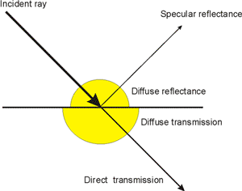

IfcSurfaceStyleLighting
Definition from IAI: IfcSurfaceStyleLighting is a
container class for properties for calculation of physically exact illuminance
related to a particular surface style.  The illustration above shows the reflection and transmission components
from an incident ray. The sum of the components for reflection and transmission
is a value of 1.0 denoting that the incident ray is completely decomposed into
reflection and transmission components. Each value of reflection and
transmission is therefore within the range 0.0 to 1.0. All these factors can be measured physically and are ratios for the red,
green and blue part of the light. These properties are defined in the model as
Type IfcColorRGB with a factor for each colour. EXAMPLE: A green glass transmits only green light, so
its transmission factor is 0.0 for red, between 0.0 and 1.0 for green and 0.0
for blue. A green surface reflects only green light, so the reflectance factor
is 0.0 for red, between 0.0 and 1.0 for green and 0.0 for blue.
HISTORY: New entity in IFC 2x
Edition 2.
EXPRESS specification:
|
| DiffuseTransmissionColour | : | The degree of diffusion of the transmitted light. In the case of completely transparent materials there
is no diffusion. The greater the diffusing power, the smaller the direct component of the transmitted
light, up to the point where only diffuse light is produced.A value of 1 means totally diffuse for that
colour part of the light. --- The factor can be measured physically and has three ratios for the red, green and blue part of the light. --- --- |
| DiffuseReflectionColour | : | The degree of diffusion of the reflected light. In the case of specular surfaces there is no diffusion.
The greater the diffusing power of the reflecting surface, the smaller the specular component of the
reflected light, up to the point where only diffuse light is produced. A value of 1 means totally diffuse
for that colour part of the light. The factor can be measured physically and has three ratios for the
red, green and blue part of the light. |
| TransmissionColour | : | Describes how the light falling on a body is totally or partially transmitted. The factor can be measured
physically and has three ratios for the red, green and blue part of the light. |
| ReflectanceColour | : | A coefficient that determines the extent that the light falling onto a surface is fully or partially
reflected. The factor can be measured physically and has three ratios for the red, green and blue part
of the light. |
|